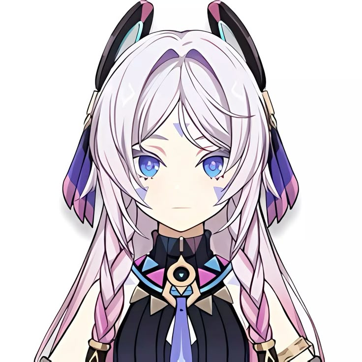
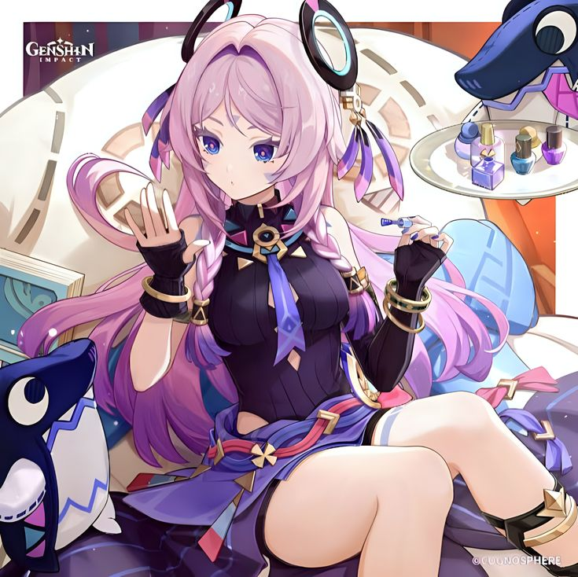

Genshin Cuties - Citlali
Citlali ˚₊‧꒰ა❤︎໒꒱ ‧₊
Citlali é uma personagem de 5 estrelas do elemento Cryo. Conhecida como "granny/grandma" pelos Mestres do Vento Noturno, ela é uma xamã poderosa e super respeitada em Natlan. Apesar de preferir ficar na dela para não se apegar a pessoas que vivem pouco perto dela, no fim das contas, todo mundo acaba correndo atrás dela quando precisa de ajuda. Ela tem um temperamento meio explosivo e não liga muito pras próprias regras, mas, no fundo, também tem um lado mais consciente e até um pouco envergonhado.

